VERA
Kỷ nguyên mới Rủi ro trùng tên: CaoHai nửa giống hệt ghép thành V: thật và bản số. VeraCore (phần mềm kho, cùng nhóm ngành sản xuất), Tricentis Vera, Vera Suite…
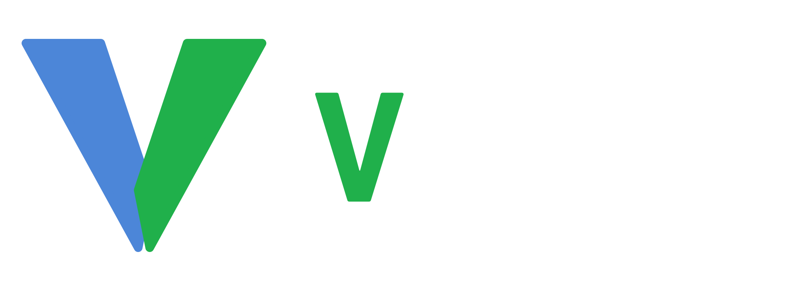
Khối thép đặc được rèn thành chữ V, thanh phôi xanh bên dưới. Có "The Virtual Forge" (Đức, phần mềm/dịch vụ) — tên gần, không trùng hẳn.
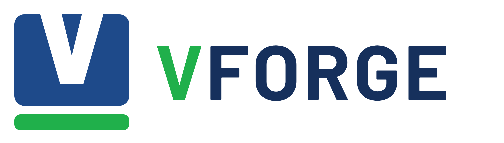
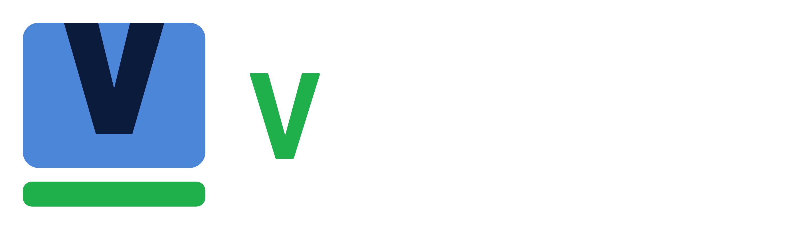
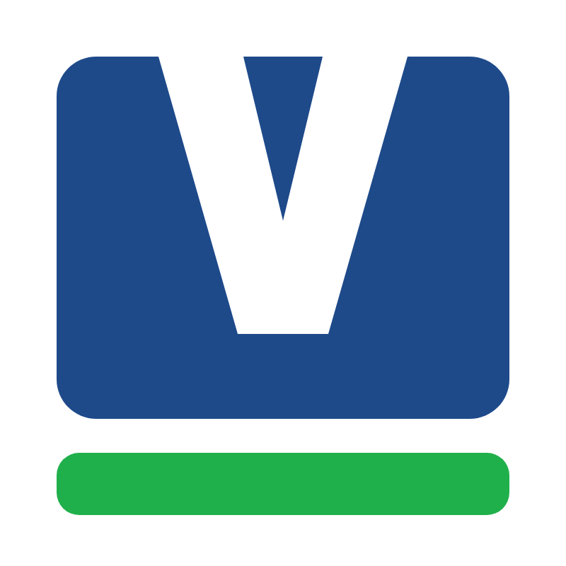
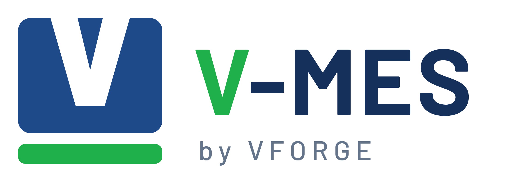
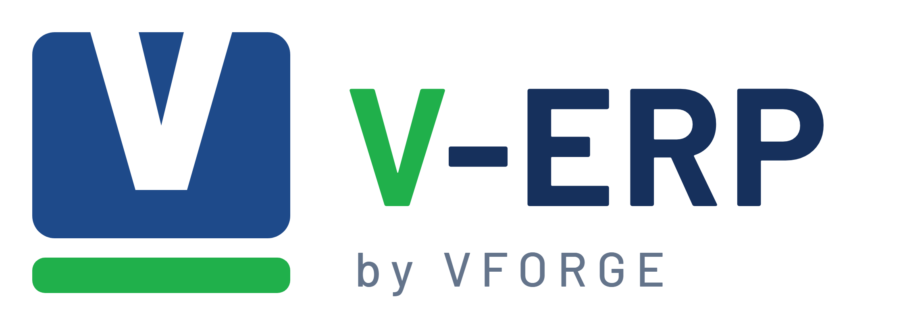
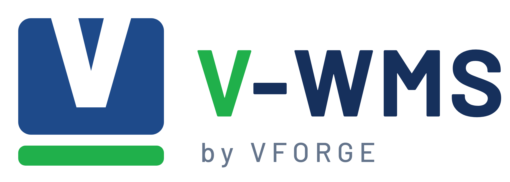
Hai thanh thép nối bằng bu lông: kết cấu chắc, gắn kết. Chỉ trùng tên một module mã nguồn mở (vstruct trong vivisect), không phải sản phẩm thương mại.
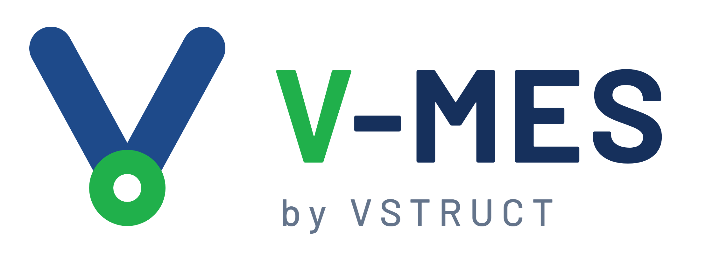
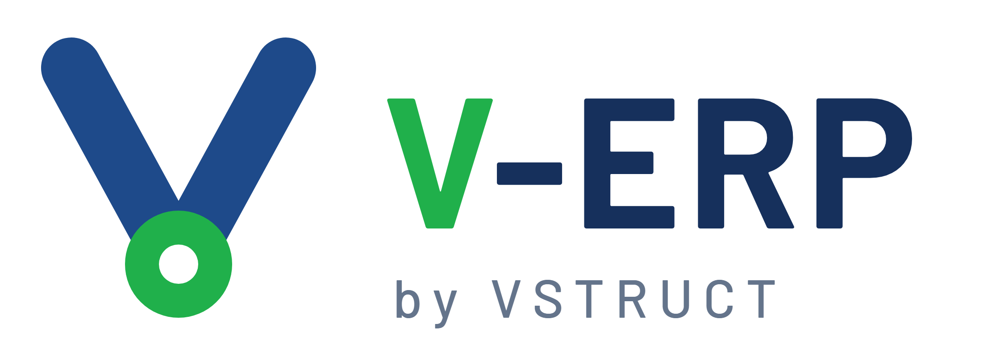
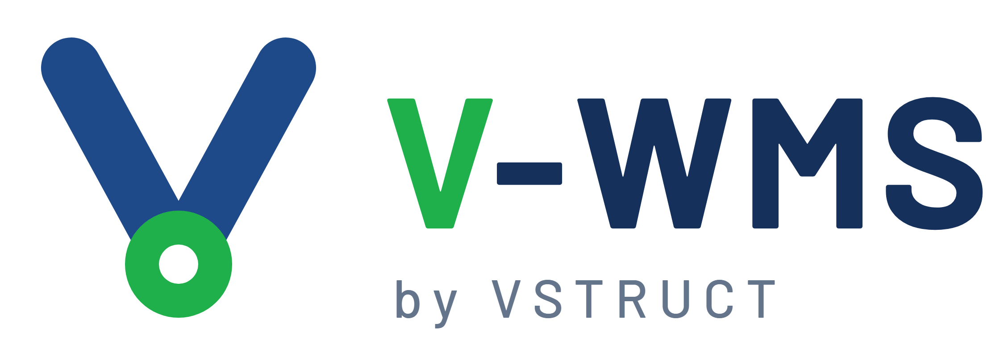
Lục giác đặc, chữ V rỗng, nhân vuông xanh ở đỉnh. Nhiều công ty đã dùng: VCORE Solutions (IoT), vCORE Technology Partners (IT, Mỹ)…
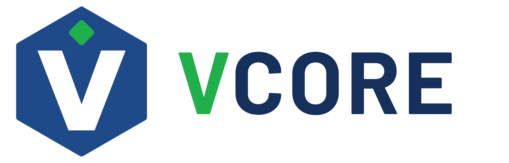
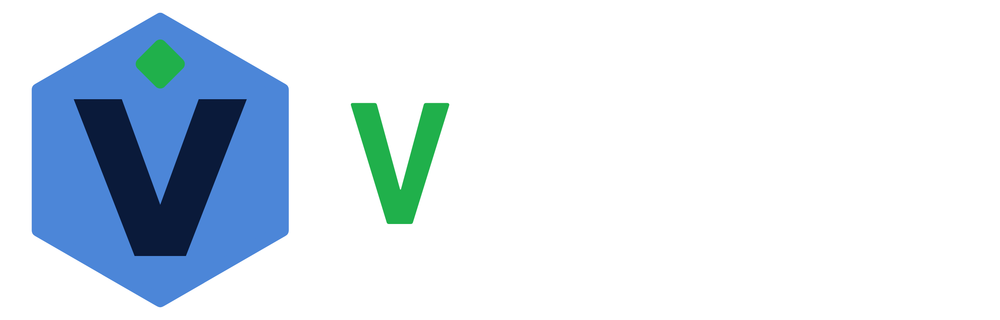
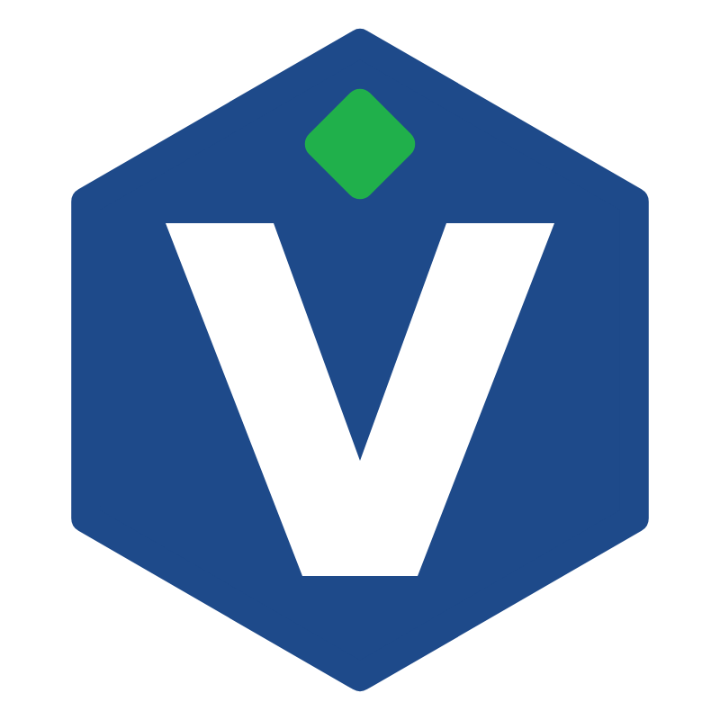
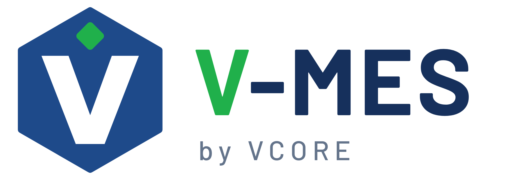
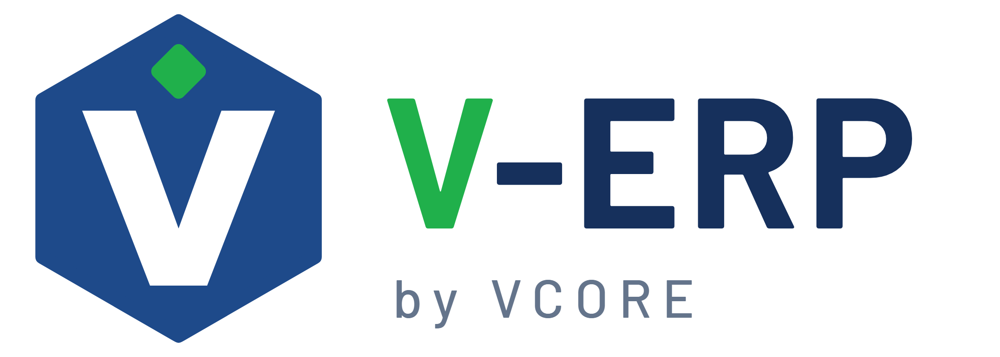
Hai nửa giống hệt ghép thành V: thật và bản số. VeraCore (phần mềm kho, cùng nhóm ngành sản xuất), Tricentis Vera, Vera Suite…

Hai chữ V xếp chồng: sản xuất tiến lên từng lớp. Vmake.ai — app AI dựng video khá phổ biến; dễ bị nhầm khi tìm kiếm.